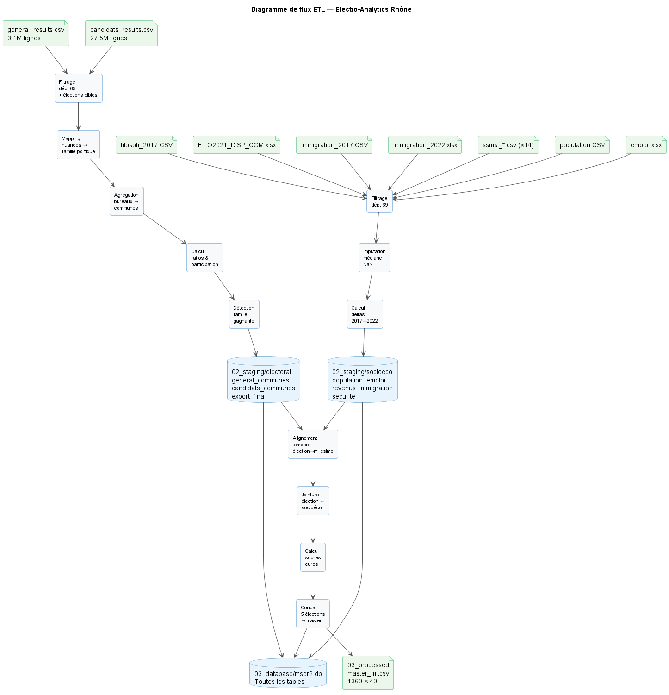
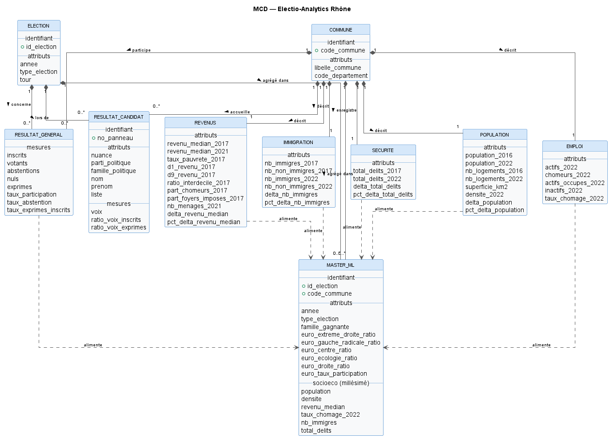

Peut-on lire un résultat électoral dans les données d'un territoire ?
Le projet part d'une hypothèse simple : le revenu, l'emploi, la démographie ou la sécurité d'une commune laissent une empreinte sur son vote. Nous avons construit la chaîne complète pour le vérifier, de la donnée brute à la projection.
Prédire la famille gagnante
Pour chaque commune, le modèle désigne la famille politique en tête au premier tour : Centre, Droite, Extrême droite ou Gauche.
Le département du Rhône (69)
280 communes et 1,9 million d'habitants, de la métropole de Lyon aux villages du Beaujolais : un territoire contrasté, urbain et rural.
L'approche « delta »
Plutôt qu'une photo figée, on mesure l'évolution des indicateurs entre 2017 et 2022 pour capter la dynamique de chaque territoire.
Des sources publiques, ramenées à l'échelle de la commune
Les résultats électoraux bruts représentent plus de 30 millions de lignes à l'échelle nationale. Ils sont filtrés sur le Rhône, puis agrégés du bureau de vote à la commune.
| Source | Contenu | Millésimes |
|---|---|---|
| Ministère de l'Intérieur | Résultats par bureau de vote : présidentielles, législatives, européennes | 2014 → 2024 |
| INSEE — Recensement | Population, logements, emploi et chômage, immigration | 2017, 2022 |
| INSEE — Filosofi | Revenu médian, taux de pauvreté, déciles et rapport interdécile | 2017, 2021 |
| SSMSI | Délinquance enregistrée par commune (14 fichiers) | 2017 → 2022 |
25 635 €
Médiane des communes (Filosofi 2021), de 16 880 € à 42 270 € selon la commune.
6,2 %
Taux médian des communes au recensement 2022, de 1,9 % à 19,8 %.
Des nuances aux familles
Les dizaines de nuances officielles sont regroupées en grandes familles pour rendre les scrutins comparables entre eux.
De la donnée brute au jeu d'entraînement, en quatre étapes
Le traitement est entièrement automatisé dans pipeline.py et documenté pas à pas dans les notebooks.
01_rawFichiers officiels tels que téléchargés : CSV, Excel, Parquet.
02_stagingFiltrage sur le Rhône, nettoyage, mapping des nuances, agrégation par commune.
03_processedJointure électoral × socio-économique, imputation, calcul des deltas : le master ML.
04_outputsModèles entraînés, graphiques d'analyse et projections.


En sept ans, la carte du Rhône a changé de couleur
Nombre de communes où chaque famille arrive en tête au premier tour. En 2017, le Centre dominait les législatives ; en 2024, l'Extrême droite est première dans 7 communes sur 10.
Source : 03_processed/master_ml.csv. La gauche radicale est regroupée avec la Gauche. Le nombre de communes varie (280 puis 266–267) à cause des fusions de communes et du secret statistique.
Quatre algorithmes, trois jeux de variables
Les modèles apprennent à retrouver la famille gagnante des législatives 2024 dans 266 communes : 212 pour l'entraînement, 54 gardées de côté pour le test.
Barres : exactitude (accuracy) sur les 54 communes de test. Le trait vertical marque 70 %, le score obtenu en répondant toujours « Extrême droite ».
| Modèle | Accuracy | F1 pondéré | Validation croisée |
|---|
Régression logistique, master + deltas
47 communes sur 54 correctement classées (87 %), soit 17 points de mieux que la réponse majoritaire. Ajouter les deltas aux variables de base améliore trois des quatre modèles.
Utiles en complément, insuffisants seuls
Avec les 12 variables d'évolution seules, le meilleur score tombe à 78 %. La dynamique d'un territoire informe, mais ne remplace pas son profil ni son historique de vote.
Présidentielle 2027 : le Centre resterait en tête dans le Rhône
Un second modèle, entraîné sur la présidentielle 2022 (89 % d'exactitude en test), projette la famille en tête dans chacune des 267 communes.
Projection indicative : elle prolonge les données socio-économiques 2017–2022 et les derniers signaux électoraux. Elle ne tient compte ni des candidats, ni de la campagne, ni des événements à venir.
Les analyses en images
Une sélection des graphiques produits par les notebooks. Cliquer sur une image pour l'agrandir.
Ce que ces résultats ne disent pas
Un modèle électoral se juge aussi à la clarté de ses limites.
- Des classes très déséquilibréesEn 2024, l'Extrême droite gagne 187 communes sur 266, la Droite seulement 12. Aucun modèle ne reconnaît correctement les communes de Droite du jeu de test.
- Un jeu de test réduit54 communes : chaque erreur pèse près de 2 points d'exactitude. Les écarts entre modèles sont à lire avec prudence.
- Un test dans la même électionEntraînement et test sont tirés au hasard dans le scrutin de 2024. Prédire une élection future à partir des précédentes est plus difficile : un essai enregistré dans bilan_modeles.csv plafonne à 59 %.
- La commune, pas l'électeurLe modèle prédit qui arrive en tête, pas les scores. Une commune de 300 habitants compte autant que Lyon : ce n'est pas une estimation en voix.
Un projet mené à quatre
Réalisé dans le cadre de la MSPR (Mise en Situation Professionnelle Reconstituée) à l'EPSI.
Product Manager
Cadrage fonctionnel et priorisation.
Data Analyst
Exploration et analyse des données.
Data Scientist
Feature engineering et modélisation.
Data Engineer
Pipeline de données et infrastructure.